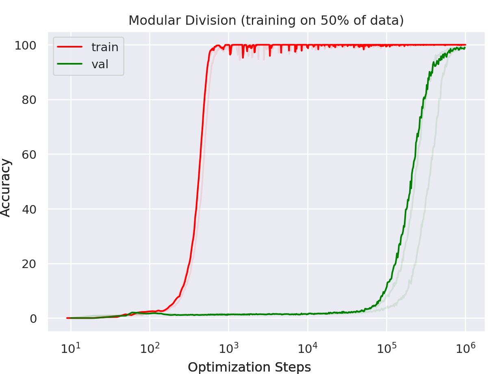

Czym Jest Grokking
Abstrakt
W ciągu ostatnich miesięcy poświęciłem sporo czasu na eksplorację i zrozumienie zjawiska opóźnionej generalizacji, znanego formalnie jako grokking. Zjawisko to jest interesujące, ponieważ całkowicie przeczy założeniu "przetrenowanie uniemożliwia zdolność do generalizacji", w kontekście klasycznego uczenia maszynowego. Jest także bardzo ciekawym obiektem do obserwacji tego, jak model tworzy reprezentacje w różnych problemach algorytmicznych. Poniższy artykuł ma na celu przeprowadzenie przez ostatnie lata rozwoju tego pojęcia oraz przedstawienie ciekawych obserwacji i badań.
Wstęp
Zjawisko grokowania i sam termin, przedstawione zostały w pracy "Grokking: Generalization Beyond Overfitting on Small Algorithmic Datasets"[1]. Autorzy przeprowadzili serię treningów na zbiorach algorytmicznych z użyciem architektury transformer[2], które przebiegły w sposób nietypowy z punktu widzenia dynamiki uczenia. Przy pewnych konfiguracjach: (i) model zapamiętywał zbiór treningowy, (ii) następowała długa faza przetrenowania, (iii) po bardzo dużej liczbie epok model wykazywał gwałtowną (skokową) poprawę metryki na zbiorze walidacyjnym (Rysunek 1).

Wspomniana publikacja miała charakter głównie empiryczny, bez przedstawienia formalnego wyjaśnienia zjawiska. Autorzy nie badali chociażby tego, czy skokowa generalizacja stanowi przejście fazowe, jak ewoluuje struktura reprezentacji w przestrzeni osadzeń ani jak dynamika tego procesu kształtuje się na innych architekturach. Odpowiedzi na te zagadnienia dostarcza nurt interpretowalności mechanistycznej.
Interpretowalność Mechanistyczna
Interpretowalność mechanistyczna jest dziedziną badań nad sztuczną inteligencją zajmującą się analizą sieci neuronowych za pomocą inżynierii wstecznej ich struktur obliczeniowych[3]. Przełomowym sformalizowaniem tego podejścia w kontekście architektury Transformer była praca "A Mathematical Framework for Transformer Circuits"[4]. Autorzy zaproponowali metodologię matematyczną pozwalającą dekomponować działanie sieci na obwody — wybrane podstruktury funkcjonalne architektury realizujące konkretne operacje algorytmiczne.
Głównym założeniem formalizmu jest traktowanie strumienia rezydualnego jako magistrali danych. Koncepcja ta została oparta na wykorzystaniu połączeń rezydualnych (skip connections). W kontekście procesu optymalizacji wprowadzono je, aby rozwiązać problem zanikającego gradientu[5], wspomagając tym samym proces uczenia się sieci. Z perspektywy obserwacji reprezentacji zastosowanie tych połączeń wymusza addytywność. Warstwy uwagi i perceptronu nie nadpisują stanu na obecnym etapie ani nie tworzą jednej skompresowanej reprezentacji, przez którą musiałaby przejść cała informacja (jak w klasycznym autoenkoderze), a raczej dodają pewien kontekst wynikający z poddawanej transformacji.
Powyższe narzędzia pozwoliły na bardziej świadome analizy architektur i tego, co się w nich pojawia. Praca, która jako pierwsza zbadała zjawisko w kontekście grokowania, bazując na interpretowalności mechanistycznej jest "Progress measures for grokking via mechanistic interpretability"[6]. Autorzy przeanalizowali w niej proces uczenia jednopoziomowego transformera na zadaniu dodawania modularnego \( a + b \ (\text{mod} \ P) \).
References
- Power, A., Burda, Y., Edwards, H., Babuschkin, I., & Sutskever, I. (2022). Grokking: Generalization Beyond Overfitting on Small Algorithmic Datasets. arXiv:2201.02177.
- Vaswani, A., Shazeer, N., Parmar, N., Uszkoreit, J., Jones, L., Gomez, A. N., Kaiser, Ł., & Polosukhin, I. (2017). Attention Is All You Need. NeurIPS.
- Olah, C., Cammarata, N., Schubert, L., Goh, G., Petrov, M., & Carter, S. (2020). Zoom In: An Introduction to Circuits. Distill.
- Elhage, N., Nanda, N., Olsson, C., Henighan, T., Joseph, N., Mann, B., et al. (2021). A Mathematical Framework for Transformer Circuits. Transformer Circuits Thread, Anthropic.
- He, K., Zhang, X., Ren, S., & Sun, J. (2016). Deep Residual Learning for Image Recognition. CVPR.
- Nanda, N., Chan, L., Lieberum, T., Smith, J., & Steinhardt, J. (2023). Progress Measures for Grokking via Mechanistic Interpretability. ICLR.